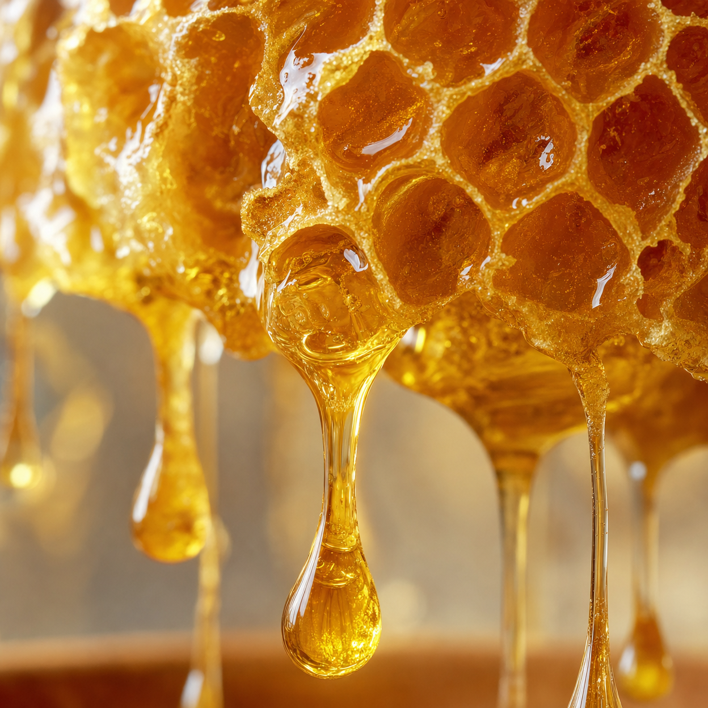

O descoperire fascinantă despre un ritual străvechi a început să circule rapid printre cei care caută să-și păstreze mintea ageră. Nu este vorba despre mierea obișnuită de supermarket, ci despre un proces biologic specific, cunoscut sub numele de „mecanismul mierii”, care pare să aibă un impact neașteptat asupra modului în care creierul nostru procesează informațiile.
Cercetătorii au observat că anumite compuși rari găsiți în acest „aur lichid” acționează ca un suport natural pentru conexiunile neuronale. Întrebarea care îi preocupă pe mulți este: cum poate un ingredient atât de simplu să fie cheia pentru a recupera acea claritate mentală pe care mulți o considerau pierdută?
În România, tot mai mulți seniori raportează că acest ritual de 30 de secunde le-a schimbat complet modul în care își amintesc detalii, nume și momente importante. Curiozitatea este la cote maxime: ce anume face ca acest tip de miere să fie atât de diferit și de ce nu am aflat despre asta până acum?
Dacă ați observat mici scăpări de memorie sau pur și simplu doriți să vă protejați agilitatea mentală, trebuie să înțelegeți știința din spatele acestui mecanism natural. Este o metodă blândă, dar care sfidează tot ce știam despre îmbătrânirea cognitivă.

Am pregătit o prezentare video exclusivă care dezvăluie exact de ce acest tip de miere este considerat un „miracol tăcut” pentru memorie și cum puteți beneficia de acest mecanism chiar de astăzi.
Află secretul memoriei agere aici